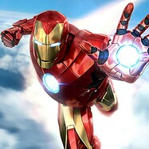

Autres projets
Si tu as aimé mon contenu et que tu souhaites en savoir plus sur la pollution numérique, tu devrais aimer ces projets.
MemoRage par Lucie Petit


DryOasis par Gaël Pardonnet
AInteractive par Matéo Rivaud
Nociweb par Elora Perrin
Toxiweb par Mohamed Rihi


Dark side of Facebook par Hugo Rallu


W-foulness par David Philippe
Polluweb par Yanis Salmi

Digital Pollution Alternative par Théo Reille
Numeric Galaxy par Simon Quiévreux